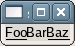

The pattern of underlines you want under the existing text within the GtkLabel widget.
For example if the current text of the label says "FooBarBaz" passing a pattern of "___ ___" will underline "Foo" and "Baz" but not "Bar".
Example 91. Setting the Pattern of a GtkLabel
<?php
// Create a window to hold the label.
$window = new GtkWindow();
// Set up the window to close cleanly.
$window->connect_simple('destroy', array('Gtk', 'main_quit'));
// Create a label.
$label = new GtkLabel('FooBarBaz');
// Set the pattern.
$label->set_pattern('___ ___');
// Add the label to the window.
$window->add($label);
// Show the window and start the main loop.
$window->show_all();
Gtk::main();
?>
|
